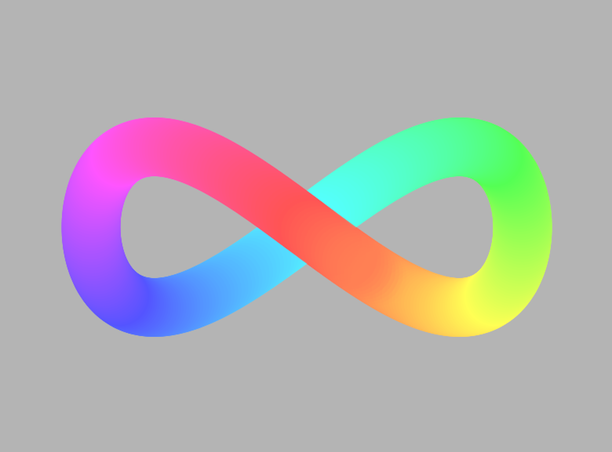

Neurodiversity Rainbow Lemniscape
19th August 2019

The symbol autistics prefer. Not a jigsaw piece, nothing missing, nothing needs solving.
// ND Lemniscate rainbow curve
int iterations = 360;
int alphaDelta = 40;
int saturation = 170;
void setup(){
size(800, 600);
noStroke();
colorMode(HSB);
background(180);
}
void draw(){
if(frameCount < iterations){
fill(map(frameCount, 0, iterations, 0, 255), saturation, 255);
}else{
alphaDelta += 10;
fill(map(frameCount-iterations, 0, iterations, 0, 255), saturation, 255, 255 - alphaDelta);
}
translate(width/2, height/2);
float x = sin(radians(frameCount));
float y = sin(radians(frameCount)) * cos(radians(frameCount));
ellipse(x * 275, y * 205, 75, 75);
if (frameCount == iterations + 30){
noLoop();
}
}